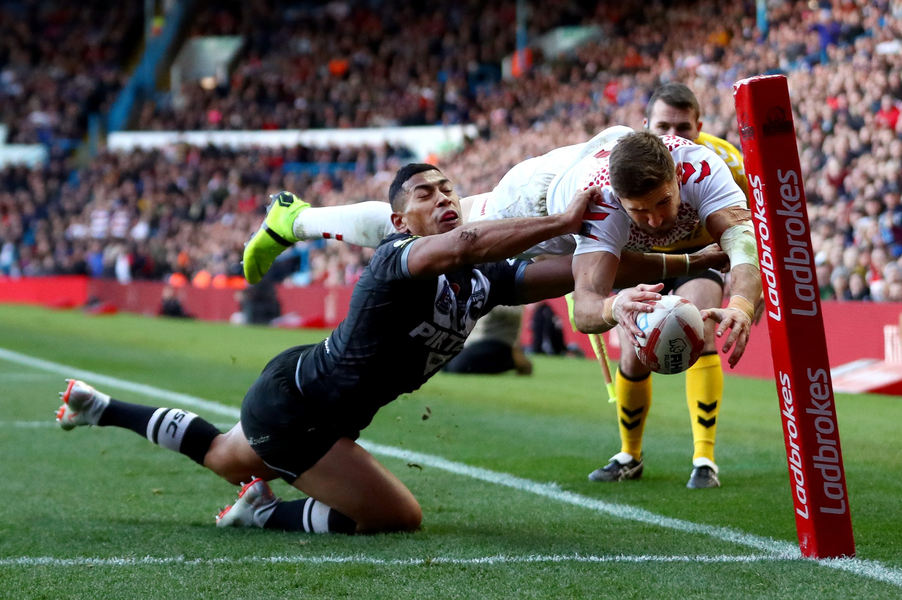
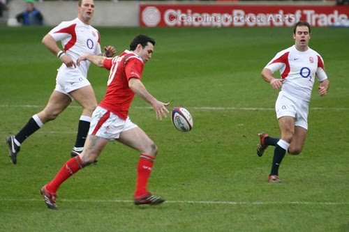
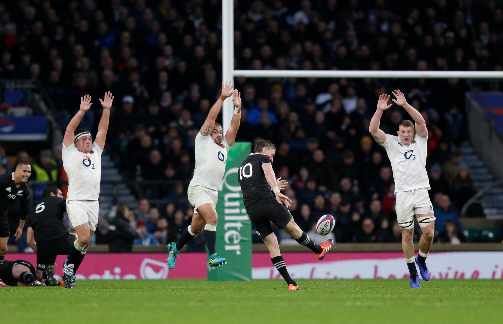
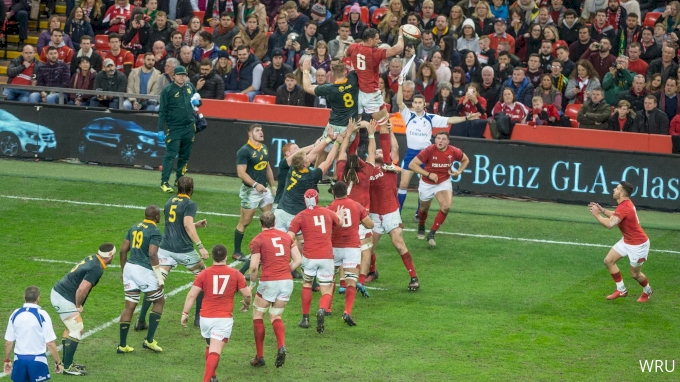

Antes de começar a falar sobre as regras básicas do Rugby, precisamos entender e saber que existem duas formas de se jogar: a primeira é conhecida como Rugby XV e a outra é o Rugby Sevens.
Rugby XV
Duas equipes de 15 jogadores cada
jogam 2 tempos de 40 minutos em um campo de 100m x 70m.
Rugby Seven
Duas equipes de 7 jogadores cada
jogam 2 tempos de 7 minutos em um campo de 100m x 70m.
Agora, vamos às regras!
Regras básicas do Rugby
Durante o jogo de Rugby a bola só pode ser passada para o lado ou para trás, nunca para frente. Apenas o chute é permitido para a frente.
Somente o atleta que está com a bola pode ser derrubado, a ação de derrubar o adversário se chama tackle, porém, o contato só pode ser feito da linha do peito para baixo.
Jogadas e pontuação
Try: Para fazer um Try, o jogador precisa passar a linha de gol do adversário e colocar a bola no chão. Cada Try vale 5 pontos.

Conversão: Sempre após a marcação do Try, a equipe que pontuou tem o direito a um chute para os Hs (gol do Rugby). Lembrando que nesse caso a bola fica parada em um apoio e vale 2 pontos. Obs: Na modalidade Sevens o chute deve ser feito como um Drop Goal.

Penalidade: Funciona da mesma forma que a Conversão, porém apenas depois de uma falta grave.
Drop Goal: É um chute de “bate-pronto”, onde a bola deve quicar antes do chute e passar pelo H, esse chute pode ser dado a qualquer momento do jogo e vale 3 pontos.

Bolas Paradas
Line-out: Quando a bola sai pela lateral, são formadas duas filas paralelas e a bola deve ser lançada entre elas. A equipe que pegar a bola, permanece com a posse.

Scrum: É uma forma de reinício de jogo, sempre quando há uma infração leve, por exemplo, um passe para frente. Nesse momento o time que não cometeu a infração coloca a bola no túnel para ganhá-la de volta.